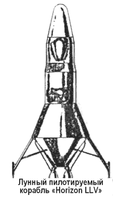

Проект «Horizon»: американская военная база на Луне
Один из первых серьезных проектов постоянной обитаемой базы на Луне был рожден в недрах военно-воздушных сил США и разрабатывался в рамках амбициозной программы «Горизонт» («Horizon»).
Поскольку я еще не рассказывал об этой программе, то остановлюсь на ней поподробнее.
В апреле 1960 года Управление баллистических ракет ВС США подготовило на основе инициативных проектных разработок, выполненных специалистами таких ведущих американских авиационно-космических корпораций, как «Боинг», «Норт Америкен», «Дуглас», «Рипаблик» и других, общий замысел и план реализации программы создания военной базы на Луне, получившей название «Горизонт».
Цель исследования была сформулирована так: «…выявить экономичный и реалистический подход к проблеме создания обитаемой разведывательной обсерватории на Луне».
Во вводной части этого документа есть характерное замечание:
«По мере реализации исследований стало очевидным, что разрабатываемая программа не относится к «отдаленному будущему». Если из лунной программы предполагается извлечь максимальные военные преимущества, то работу над проблемами, требующими для своего решения продолжительного времени, необходимо начать немедленно. Если это будет сделано, то США смогут послать человека на Луну и вернуть его на Землю в последнем квартале 1967 года». (Заметим в скобках, что именно эта фраза из документа, посвященного перспективам использования Луны в военных целях, была позднее включена в текст послания президента Кеннеди, озвученного 25 мая 1961 года.)

Очевидно, что решение президента Кеннеди о начале реализации проекта «Аполлон» во многом не совпадало с замыслами авторов проекта «Горизонт», которые намеревались создать чисто военный объект на лунной поверхности:
«Окончательное решение относительно типов стратегических систем, которые будут размещены на Луне (например, система бомбардировки Земли), может быть без каких-либо осложнений отсрочено на три-четыре года.
Однако планы создания лунной базы не следует откладывать на неопределенное время, а ее первоначальный проект должен отвечать военным требованиям».
Авторы не расценивали свой проект как далекую от реализации техническую фантазию. Они обосновывали возможные сроки решения основных технических проблем, оценивали необходимые ассигнования. Свой замысел авторы предлагали осуществить в пять этапов:
«1. Первое возвращение на Землю образцов лунного грунта — ноябрь 1964 года.
2. Первая высадка на Луне и возвращение экипажа на Землю — август 1967 года.
3. Временная база на лунной поверхности (на 12 человек) — ноябрь 1967 года.
4. Завершение строительства лунной базы (на 21 человека) — декабрь 1968 года.
5. Действующая лунная база — июнь 1969 года».
В качестве основного носителя авторы программы рассматривали ракеты «Сатурн I» и «Сатурн II» — проектанты считали, что первая ракета пойдет в серийное производство в октябре 1963, вторая — в течение 1964 года.
К концу 1964 года планировалось осуществить не менее 72 запусков ракет серии «Сатурн», 40 из которых нацеливались на реализацию задач программы «Горизонт». Дальнейшее развитие программы требовало запусков еще 61 ракеты «Сатурн I» и 88 ракет «Сатурн II». Благодаря этим за пускам до ноября 1966 года на Луну было бы доставлено свыше 220 тонн грузов. В течение первого эксплуатационного периода лунной базы предполагалось совершить еще 64 дополнительных запуска, при этом на Луну доставлялись бы 120 тонн полезных грузов.
Конструкция космического корабля для доставки людей и материалов на поверхность Луны и возвращения людей на Землю и схема перелета по маршруту Земля-Луна и обратно существенно отличались от проекта «Аполлон»: для создания военной базы на Луне предусматривался пятиступенчатый пилотируемый аппарат с двигателями на химическом топливе, который должен был выполнить «прямой перелет» на Луну, минуя околоземную и окололунную орбиты.
Место для базы планировалось выбрать после завершения этапа подробного картографирования и непосредственного изучения лунной поверхности, однако для наиболее полного выполнения военных задач зоной ее местоположения была определена территория в границах между ± 20° по широте и долготе от оптического центра видимой стороны Луны.
Сначала на Луну предполагалось высадить двух астронавтов, которые будут находиться там до прибытия первой строительной партии из девяти человек. Уже через шесть месяцев после этого на Луне начнет функционировать первая временная база. Основным элементом базы является цилиндрический герметизируемый контейнер диаметром 3 метра и длиной 6 метров. Эти контейнеры укладываются в ров глубиной в 3,5 метра и соединяются герметичными тамбурами.
Электропитание базы и строительного оборудования осуществляется с помощью двух атомных реакторов. Все постройки, кроме средств связи и космодромных сооружений, будут засыпаны лунным грунтом. Чтобы снизить теплоотдачу, герметизированные помещения, помимо грунта, покроют специальной двухслойной теплоизоляцией.
Общая стоимость программы «Горизонт», по оценке экспертов ВВС, должна была составить около шести миллиардов долларов.
Понятно, что проект строительства военной базы на Луне был строжайшим образом засекречен. Тем не менее, периодически происходили «утечки» информации и кое-какие подробности проекта «Горизонт» стали достоянием общественности.
Так, журнал «Юнайтед стейтс ньюс энд Уорлд рипорт» («U. S. News and World Report»), выражая замыслы «ряда генералов» из Пентагона, уже в феврале 1958 года сообщил о планах создания базы на Луне. Тогда же представитель министерства обороны США Эдсон заявил, что захват «лунных территорий» должен стать основной целью внешней политики США, поскольку «лунная крепость» может решить исход соперничества на Земле. Другой представитель министерства обороны США Брэкер сообщил, что разрабатываются карты американских военных баз на Луне, охватывающие «семьдесят районов лунной поверхности» (?!).
Подполковник Сингер, работавший в Центре специальных вооружений ВВС США, разъяснял на страницах журнала «Эр форс» («Air Force») в ноябре 1958 года, что с военной точки зрения основой устрашения должна быть возможность нанесения удара независимо от действий противника.
Собственные силы или будут находиться в полной безопасности от нападения, или будут организованы таким образом, чтобы те их элементы, которые уцелеют после нападения противника, могли нанести ответный удар огромной мощности.
Тогда ценность лунных баз в стратегии устрашения в большой степени будет зависеть от того, насколько находящаяся на них группировка будет уязвима от ударов противника по сравнению с группировкой, базирующейся на Земле.
Ракеты на Луне можно было бы разместить на стартовых площадках под лунной поверхностью. Топографические характеристики Луны, наличие на ее поверхности многочисленных кратеров и трещин позволят легко выбрать места для размещения ракетных баз. В своих рассуждениях относительно военных действий в космосе Сингер отмечал, чтo космос вообще и Луна в частности могут стать «самым лучшим местом для ведения боевых действий».
Военные специалисты США особо подчеркивали, что естественные характеристики этих боевых позиций (хорошая защищенность и скрытность) могут вообще не потребовать строительных работ для организации баз, или объем этих работ будет незначительным. Лунная система оружия будет очень хорошо защищена хотя бы потому, что ее сравнительно легко держать вне наблюдения противника. Прямое наблюдение за такими базами с Земли затруднено.
По мнению бригадного генерала Боуши, ракетные базы на лунной поверхности будет трудно поразить, даже если их расположение известно противнику. По этой причине лунные базы окажутся для противника «неразрешимой проблемой». Ведь даже если противник решит нанести по такой базе упреждающий удар, им придется сделать это за два с половиной дня до того, как они нанесут ракетный удар по территории США. В таких условиях удар с лунной базы будет «надежным и массированным возмездием агрессору».
Мотивы таких рассуждений американских военных специалистов разъяснил тогдашний руководитель Управления специальных вооружений ВВС США в своем выступлении перед Конгрессом: «Мне ненавистна сама мысль о том, что русские первыми высадятся на Луне. Государство, которое окажется там первым, вероятно, получит в свое распоряжение решающие преимущества над любым потенциальным противником».
Без комментариев…